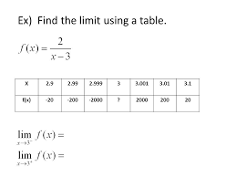

Nonexistant limits are limits that have no continuity. There is no conitnuous function where both sides meet at a certain point.

When looking at a table, it is clear that as the x values from both sides become closer together, the function's values do not come near each other, they actually are moving farther apart.